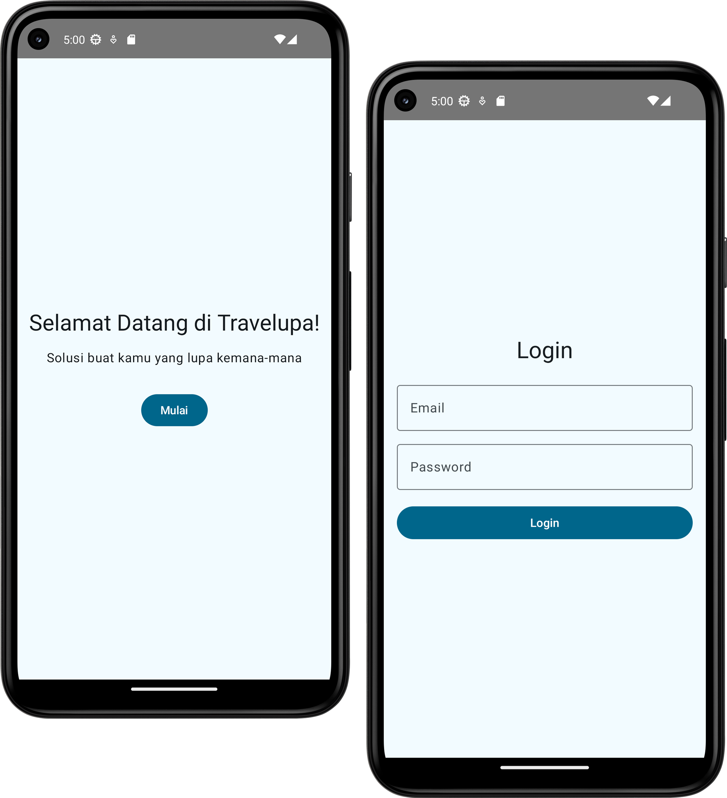
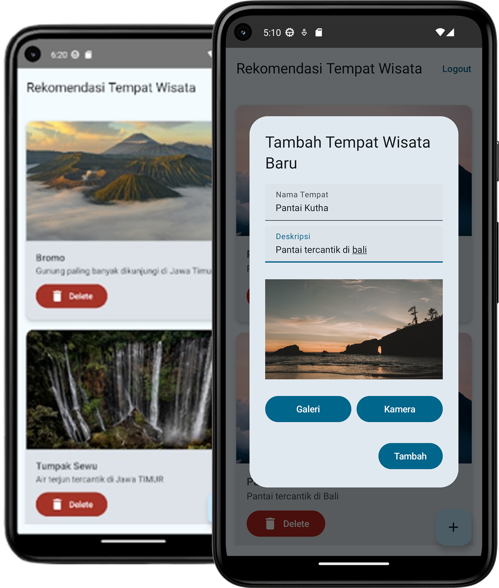
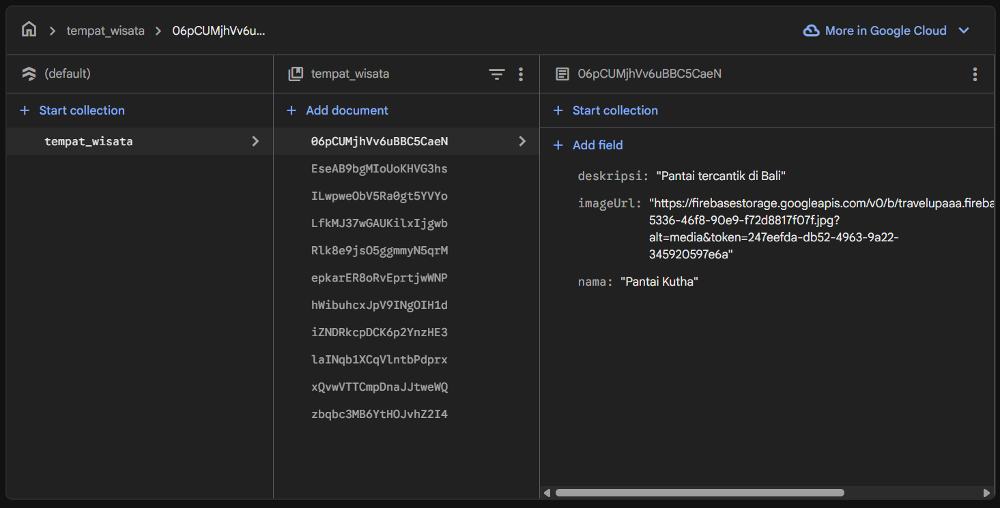

Programmer, UI designer
Android Studio, Kotlin
Nov 2025 - Des 2025
Travelupa is an individual mobile application project developed as part of the Mobile Application Development course. The project focuses on building a destination management application that allows users to add, edit, and delete travel destinations through a structured mobile interface. In this project, I was responsible for the entire development process, including UI implementation, application logic, and Firebase Firestore integration. Although the project topic was predefined by the course, all design decisions and technical implementations were independently developed to ensure functionality, data consistency, and usability.
Provides a login system that allows users to securely access the application before managing destination data. Authentication ensures that user actions and data access are properly controlled.
Allows users to add, edit, and delete travel destinations through an intuitive input form. All saved destinations are displayed in a structured list view, enabling users to review, manage, and interact with destination data efficiently.
All destination data is stored and managed using Firebase Firestore. This enables real-time data synchronization, persistent storage, and reliable data management across application sessions.
The development process began by understanding the predefined project requirements and identifying the core functionalities needed for a destination management application. The focus was on enabling basic CRUD operations with cloud-based data storage.
Core application logic was implemented using Kotlin to handle user interactions, form validation, data updates, and state changes. Special attention was given to ensuring smooth transitions between different application states.
Firebase Firestore was integrated to manage cloud-based data storage. This stage involved configuring Firebase services, defining data structures, and connecting application logic with Firestore operations.